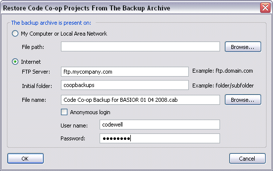

The archive created with Tools > Create Backup can be used to restore the complete Code Co-op database with all the projects present on the machine at the time of backup. This is useful in two situations:
Before you restore from backup file, make sure the computer doesn't already have a non-empty Code Co-op database. The restoration may only proceed on a fresh installation of Code Co-op.
You will first be asked for the location of the backup (see dialog below). If the backup is stored on the internet, it will be downloaded using FTP.
Once the database has been restored, Code Co-op enters the stage of project recovery. First it tries to recreate project roots, and if it can't, the Verify Root Paths dialog is displayed, prompting for new locations. Next, Code Co-op sends a Verification Request for each project. Until verification scripts are received, all check-ins are blocked. (Making a check-in from a project that is not up to date risks massive rejections of historical scripts.) Finally, Code Co-op visits all the projects and performs Project Repair. This step might take a long time.
Warning: If you are using Backup/Restore to move Code Co-op to a different computer, make sure not to perform any Code Co-op actions on the source machine, after restoring the database on the target machine. The only thing you can do on the source machine is to uninstall Code Co-op without defecting from any projects.
